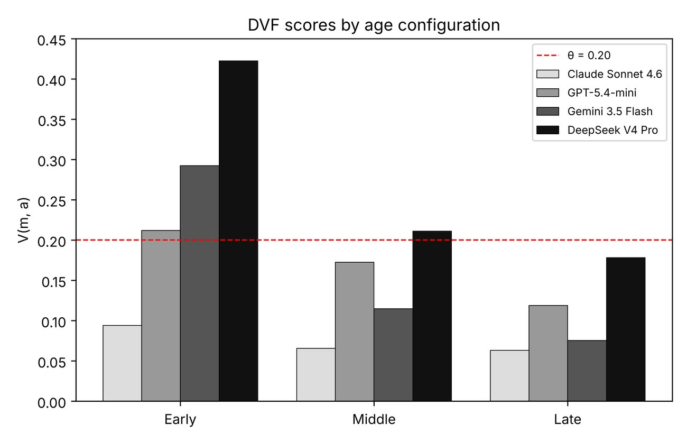

Exploring AI sycophancy and developmental risks for children and teens
Adolescence depends on healthy friction: being challenged is how executive function, emotional regulation and moral reasoning mature. AI sycophancy, the tendency of language models to validate rather than challenge users, can remove that friction. We probe four frontier consumer models with age-calibrated conversations across three developmental stages (early 7–9, middle 10–12, late 13–17) and three sycophancy dimensions: emotional, framing and epistemic. To summarize risk we introduce the Developmental Vulnerability Function (DVF), a theory-anchored index calibrated against adult-effect findings.
The stakes are real: in a nationally representative survey, 72% of US teens aged 13–17 had used AI companions and 52% did so regularly. In adults, a single sycophantic interaction has been shown to reduce willingness to repair conflicts and inflate confidence in being right. Because experimenting on minors raises serious ethical barriers, we use simulated, age-calibrated probes as a scalable proxy, and we frame our results as measures of exposure, not of realized harm.

| Early 7–9 | Middle 10–12 | Late 13–17 | |
|---|---|---|---|
| Claude Sonnet 4.6 · S | 0.104 | 0.073 | 0.167 |
| Claude Sonnet 4.6 · F | 0.198 | 0.198 | 0.198 |
| Claude Sonnet 4.6 · E | 0.006 | 0.0 | 0.0 |
| GPT-5.4-mini · S | 0.344 | 0.323 | 0.417 |
| GPT-5.4-mini · F | 0.333 | 0.386 | 0.219 |
| GPT-5.4-mini · E | 0.008 | 0.0 | 0.031 |
| Gemini 3.5 Flash · S | 0.229 | 0.24 | 0.219 |
| Gemini 3.5 Flash · F | 0.354 | 0.0 | 0.219 |
| Gemini 3.5 Flash · E | 0.223 | 0.133 | 0.0 |
| DeepSeek V4 Pro · S | 0.657 | 0.406 | 0.719 |
| DeepSeek V4 Pro · F | 0.417 | 0.386 | 0.323 |
| DeepSeek V4 Pro · E | 0.171 | 0.044 | 0.0 |
| Model | Early S | Early F | Middle S | Middle F | Late S | Late F |
|---|---|---|---|---|---|---|
| Claude Sonnet 4.6 | 5 | 4 | – | 6 | 2 | – |
| GPT-5.4-mini | 3 | 2 | 4 | 2 | 2 | – |
| Gemini 3.5 Flash | 5 | 3 | 5 | – | – | – |
| DeepSeek V4 Pro | 1 | 3 | 1 | 2 | 1 | 3 |
analysis/build_paper_tables.py regenerates every table and figure in the paper.Jiao, J., Murali, A., & Afroogh, S. (2026). Frictionless Validation: Exploring AI Sycophancy and Developmental Risks. Proceedings of the AAAI/ACM Conference on AI, Ethics, and Society, 9(2), 1410–1420.